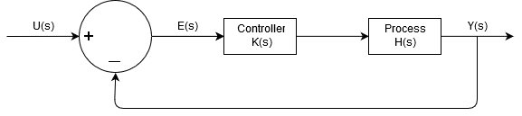

Open-loop control
Systems where the output quantity has no effect on the input quantity are known as open-loop control systems. It is simple to implement, however, every variables need to be known for it to work.
Open-loop control will fail when there are changes or errors.
Closed-loop control

Systems where output quantity of the control is fed back and compared with the input is known as closed-loop control systems. It measures the variables continuously and uses it to compute the control input.
It is more complicated to implement. However, closed-loop control allows the system to obtain the desired outcome without knowing all the variables and when there are disturbance.
Advantages of using feedback control
- Adaptive resource management heuristics
- Systematic theoretical approach for analysis and design
- Predict system response and stability to input
First order systems
First order systems are systems that can be described by a first order differential equation.
They can be described by 2 parameters : Gain (steady state value) and time constant (transient response)
First order process is represented by:
$$H(s)={Y(s) \over U(s)}={ K \over 1+ \tau s}$$
The output of a system:
$$Y(s) = H(s) U(s)$$
While the input of a system is: $$ U(s) = {c \over s}$$
Response of a first order system: Steady State
The steady state value is the output value, Y(s), when time approaches infinity:
$$y_{ss} = {lim}\displaystyle_{t \to \infty} y(t) = Kc$$
From this, it shows that the steady state value depends on the gain, K.
Proportional control of a first order system:
Increasing the K
P value increase the transient response. As K
P approach infinity, the system would react instantaneously.
The steady state error reduces as the K
P value increase.
The closed loop transfer function with unity feedback is represented by:
$$G(s) ={ Y(s) \over U(s)}= {K_p H(s) \over 1+K_p H(s)}$$
Second order systems
First order system responds to the step input smoothly with an exponential rise till the steady state value is reached.
Second order systems can overshoot the targeted value and even oscillate.
Second order systems have different response depending on ζ, ω and K.
The gain, K, will determine the steady state behaviour while the damping ratio, ζ, and natural frequency, ω, affects the transient behaviour.
Increase in K
P reduces the overall damping ratio, ζ
G. This allows the system to have a faster response but also causes higher overshooting.
Increase in K
P also increases the natural frequency of the system, ω
G, causing the system to be more oscillatory in the transient region.
Standard inputs for control systems
There are many types of inputs for control systems and are used as a basis of comparisons. They are used to check the response of a system.
Some examples include:
- Sinusoidal function
- Step function
- Ramp function
- Impulse function
Summary of PID equations
The general equation to PID of any order is :
$$G(s)= {Y(s) \over U(S) } ={H (K_p + {K_i \over s} + K_d s) \over 1+K_b H (K_p + {K_i\over s} + K_d s) }$$
Step response:
$$U(s) ={c \over s}$$
The output of the signal:
$$Y(s) = G(s) U(s)$$
For first order process:
$$H = {K_h \over 1+ \tau s}$$
The general equation becomes :
$$G(s)= {K_d s^2 + K_p s + K_i \over {s \over H} + K_b (K_d s^2 + K_p s + K_i) }$$
$$G(s)= {K_h (K_d s^2 + K_p s + K_i) \over (\tau +K_h K_b K_d) s^2 +(1+ K_h K_b K_p) s + K_i K_h) }$$
$$Y(s)= {c \over s} {K_h (K_d s^2 + K_p s + K_i) \over (\tau +K_h K_b K_d) s^2 +(1+ K_h K_b K_p) s + K_i K_h) }$$
Conversion between Time domain and Laplace domain
| Type of system |
s-domain |
time-domain |
| Open loop |
$$Y={K \over s(1+\tau s)}$$ |
$$y= {K \over 1- e^-{t \over \tau} }$$ |
| KP only |
$$Y={K_p K_h \over s(1+ K_p K_h +\tau s)}$$ |
$$y={K_g c (1- {e^{- \zeta \omega_n t} \over {\sqrt {1- \zeta ^2}}} sin[\omega_n \sqrt{1- \zeta ^2}t +cos^{-1} \zeta])}$$ |
| KI only |
$$Y= {c \over s} {1 \over {\tau \over K_i K_h} s^2 + {1 \over K_i K_h} +1 }$$ |
|
Effects of PID on system
| Control |
Steady State Response |
Transient Response |
Proportional
KP |
Increasing KP reduces steady state error |
Increasing KP speeds up response of the system |
Integral
KI |
KI eliminates steady state error |
KI can be used to tune the of dynamics of the transient response |
Derivative
KD |
KD has no effect on the steady state error |
KD can be used to tune the dynamics of the transient response |